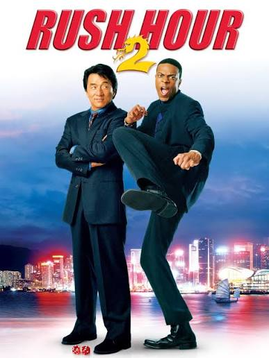

<!-- საკუთარი ჰობის ან საყვარელი ფილმის შესახებ მარტივი HTML გვერდის აწყობა ტექსტით და სურათებით. -->

<!-- <!DOCTYPE html>
<html lang="en">
<head>
    <meta charset="UTF-8">
    <meta name="viewport" content="width=device-width, initial-scale=1.0">
    <title>Rush our 2</title>
    <link rel="stylesheet" href="style.css">
</head>
<body>
    <h1>Rush our 2</h1>
    <br>
    
    <br>
    <p>Rush Hour 2 is a 2001 American buddy cop action comedy film directed by Brett Ratner and written by Jeff Nathanson. A sequel to Rush Hour (1998), it is the second installment in the Rush Hour franchise and stars Jackie Chan and Chris Tucker reprising their roles from the first film. The story follows Hong Kong Police Force (HKPF) Chief Inspector Lee (Chan) and Los Angeles Police Department (LAPD) Detective James Carter (Tucker), who go to Hong Kong on vacation only to be thwarted by a murder case involving two U.S. customs agents after a bombing at the American embassy. Lee suspects that the crime is linked to the Triad crime lord Ricky Tan (Lone). This film was filmed in Hong Kong, Los Angeles and Las Vegas.[4]</p>

    
</body>
</html> -->